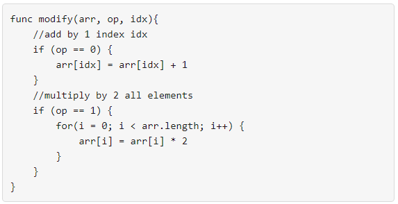

| Category | Difficulty | Likes | Dislikes |
|---|---|---|---|
| Algorithms | Medium | 643 | 38 |
amazon
You are given an integer array nums. You have an integer array arr of the same length with all values set to 0 initially. You also have the following modify function:

You want to use the modify function to convert arr to nums using the minimum number of calls.
Return the minimum number of function calls to make nums from arr.
The test cases are generated so that the answer fits in a 32-bit signed integer.
Example 1:
Input: nums = [1,5]
Output: 5
Explanation: Increment by 1 (second element): [0, 0] to get [0, 1] (1 operation).
Double all the elements: [0, 1] -> [0, 2] -> [0, 4] (2 operations).
Increment by 1 (both elements) [0, 4] -> [1, 4] -> [1, 5] (2 operations).
Total of operations: 1 + 2 + 2 = 5.Example 2:
Input: nums = [2,2]
Output: 3
Explanation: Increment by 1 (both elements) [0, 0] -> [0, 1] -> [1, 1] (2 operations).
Double all the elements: [1, 1] -> [2, 2] (1 operation).
Total of operations: 2 + 1 = 3.Example 3:
Input: nums = [4,2,5]
Output: 6
Explanation: (initial)[0,0,0] -> [1,0,0] -> [1,0,1] -> [2,0,2] -> [2,1,2] -> [4,2,4] -> [4,2,5](nums).
Constraints:
1 <= nums.length <= 1050 <= nums[i] <= 109